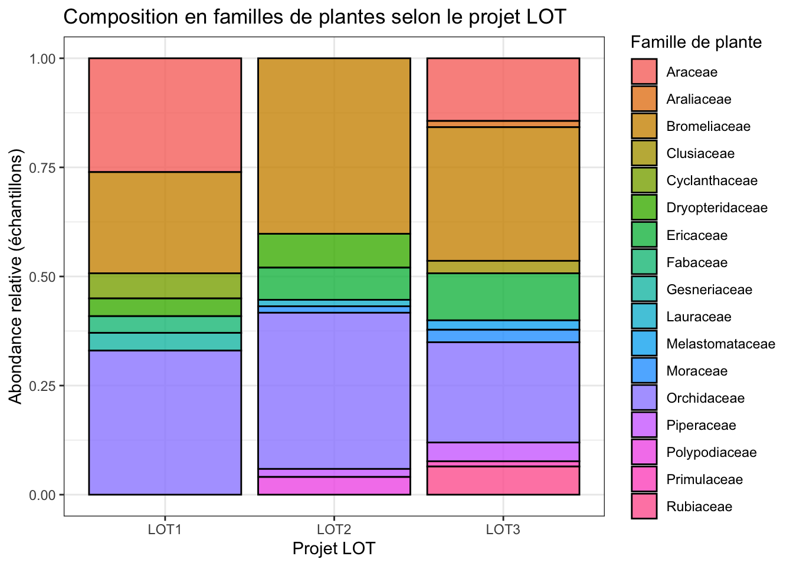
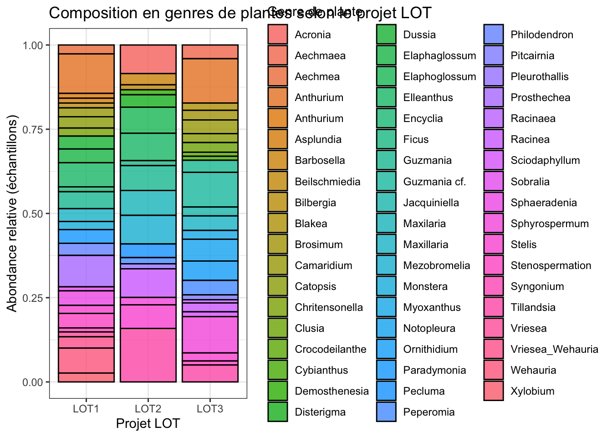
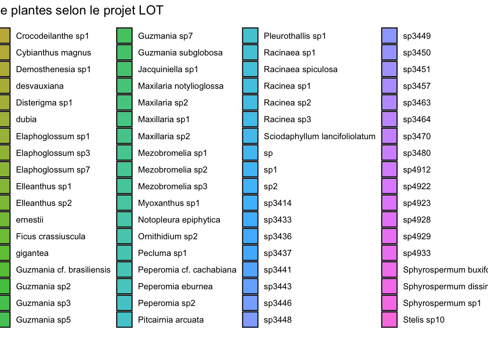

Les forêts tropicales abritent une exceptionnelle biodiversité végétale et microbienne, qui joue un rôle crucial dans le fonctionnement des écosystèmes et les cycles biogéochimiques. Parmi cette diversité, les plantes épiphytes vasculaires constituent une composante essentielle de la canopée tropicale, contribuant à la rétention d’eau, au recyclage des nutriments et à la structuration des communautés associées. Cependant, la diversité et le rôle des communautés microbiennes, et en particulier fongiques, associées aux épiphytes restent encore largement méconnus. Comprendre la composition et l’assemblage de ces communautés représente donc un enjeu de premier plan pour mieux appréhender les interactions plante- microorganismes en canopée et leurs implications écologiques dans le fonctionnement des forêts tropicales.
Question centrale
Dans quelle mesure le filtrage environnemental à l’échelle du micro-habitat (type d’organe et profondeur tissulaire) dicte-t-il l’assemblage des communautés fongiques chez les épiphytes vasculaires tropicaux, comparativement à l’identité de la plante hôte et au contexte biogéographique ?
Objectifs précis du stage
L’objectif est d’explorer la composition et l’assemblage des communautés fongiques chez les plantes épiphytes vasculaires. Plus spécifiquement, l’étude porte sur les racines et les feuilles, en distinguant la surface et l’intérieur des tissus. Nous anticipons que les communautés fongiques différeront selon les groupes taxonomiques d’épiphytes. Nous faisons également l’hypothèse que les racines et les feuilles hébergeront des communautés distinctes, reflétant les stratégies fonctionnelles déployées par ces plantes pour acquérir l’eau et les nutriments. Enfin, nous supposons que les communautés fongiques varieront entre les tissus internes et les surfaces, en raison des contrastes marqués entre ces deux environnements.
Outils et méthodes mis en œuvre
Pour répondre à cet objectif, différentes espèces de plantes épiphytes vasculaires ont été échantillonnées au Pérou et en Colombie dans le cadre du programme ‘Life on Trees’. Sur chaque individu, une jeune feuille, une feuille âgée et des racines ont été récoltées. Les microorganismes présents en surface ont d’abord été collectés à l’aide de bandes de coton imbibées de CTAB, puis les microorganismes présents à l’intérieur des tissus ont été obtenus après stérilisation de surface des organes. Les communautés fongiques ont été caractérisées par une approche de métabarcoding haut débit ciblant la région ITS, marqueur de référence pour l’étude de la diversité fongique. Les produits PCR ont été séquencés en Illumina MiSeq. Après traitement bioinformatique une table de contingence des séquences par échantillon a été produite. L’analyse de ces données sera réalisée au cours du stage afin de répondre aux différentes hypothèses. Dans un premier temps, la diversité alpha sera caractérisée en utilisant différents indices de biodiversité (richesse spécifique, Shannon, Simpson, etc.), afin d’évaluer les patrons de diversité en fonction des groupes taxonomiques d’épiphytes et des micro-habitats (feuilles vs. racines, surface vs. intérieur). Dans un second temps, la diversité bêta sera explorée par le calcul de distances de dissimilarité (ex. Bray-Curtis, Jaccard) et par des méthodes d’ordination (NMDS, PCoA) permettant de visualiser la structuration des communautés fongiques selon (1) la taxonomie des épiphytes vasculaires, (2) le type d’organe, et (3) le compartiment (surface vs tissus internes). Ces analyses seront complétées par des tests statistiques multivariés (PERMANOVA) afin de tester la significativité des facteurs discriminants. Enfin, des approches complémentaires pourront être envisagées, telles que l’identification des taxons indicateurs ou l’inférence de réseaux de co-occurrence pour explorer les interactions potentielles entre groupes fongiques.
Analyses préliminaires
Avant de se lancer dans les analyses de diversité alpha et bêta, il est important de faire un état des lieux des données disponibles. Nous allons d’abord charger les données et faire un nettoyage préliminaire pour s’assurer que nous avons les bonnes variables à notre disposition pour les analyses.
Ensuite nous allons réaliser les analyses de diversité alpha, en utilisant différents indices de biodiversité (richesse spécifique, Shannon, Simpson, etc.), afin d’évaluer les patrons de diversité en fonction des groupes taxonomiques d’épiphytes et des micro-habitats (feuilles vs. racines, surface vs. intérieur).
Puis nous analysons les diversités beta
Analyses de diversité alpha
Premierement faire un data_frame avec les échantillons et les variables d’intérêt (genre, famille, espèce de plante, etc.)
Quelques graphiques pour visualiser la diversité alpha en fonction des différentes variables d’intérêt (organ, position, plant_family, plant_genus, plant_species, project)
Wisconsin double standardization
Run 0 stress 0.2216146
Run 1 stress 0.227731
Run 2 stress 0.253678
Run 3 stress 0.2354567
Run 4 stress 0.2487804
Run 5 stress 0.240511
Run 6 stress 0.2443274
Run 7 stress 0.250685
Run 8 stress 0.2557037
Run 9 stress 0.23628
Run 10 stress 0.2391999
Run 11 stress 0.2500726
Run 12 stress 0.2450149
Run 13 stress 0.2461722
Run 14 stress 0.2439501
Run 15 stress 0.2505255
Run 16 stress 0.2543854
Run 17 stress 0.2263492
Run 18 stress 0.2327689
Run 19 stress 0.249042
Run 20 stress 0.2350488
*** Best solution was not repeated -- monoMDS stopping criteria:
2: no. of iterations >= maxit
18: scale factor of the gradient < sfgrmin
On observe que le milieu (LOT1, 2 ou 3) influe grandement sur les communautés obtenues. On peut donc chercher à determiner quelles sunt les différences majeurs entre les différents projets LOT sans prendre ne compte les otu, simplement savoir si par exemple les espèces (ou famille ou genre) de plantes changent en fonction du LOT.
Code
library(vegan)metadata <-as(sample_data(ps), "data.frame")library(dplyr)adonis2(bray_dist ~ project, data = metadata, permutations =99)
Permutation test for adonis under reduced model
Permutation: free
Number of permutations: 99
adonis2(formula = bray_dist ~ project, data = metadata, permutations = 99)
Df SumOfSqs R2 F Pr(>F)
Model 2 27.50 0.0527 30.707 0.01 **
Residual 1104 494.37 0.9473
Total 1106 521.87 1.0000
---
Signif. codes: 0 '***' 0.001 '**' 0.01 '*' 0.05 '.' 0.1 ' ' 1
ggplot(metadata, aes(x = project, fill = plant_family)) +geom_bar(position ="fill", color ="black", alpha =0.8) +theme_bw() +labs(title ="Composition en familles de plantes selon le projet LOT",x ="Projet LOT",y ="Abondance relative (échantillons)",fill ="Famille de plante")

Code
ggplot(metadata, aes(x = project, fill = plant_genus)) +geom_bar(position ="fill", color ="black", alpha =0.8) +theme_bw() +labs(title ="Composition en genres de plantes selon le projet LOT",x ="Projet LOT",y ="Abondance relative (échantillons)",fill ="Genre de plante")

Code
ggplot(metadata, aes(x = project, fill = plant_species)) +geom_bar(position ="fill", color ="black", alpha =0.8) +theme_bw() +labs(title ="Composition en espèces de plantes selon le projet LOT",x ="Projet LOT",y ="Abondance relative",fill ="Espèce de plante")

Code
adonis2(bray_dist ~ plant_family, data = metadata, permutations =99)
Permutation test for adonis under reduced model
Permutation: free
Number of permutations: 99
adonis2(formula = bray_dist ~ plant_family, data = metadata, permutations = 99)
Df SumOfSqs R2 F Pr(>F)
Model 16 24.50 0.04694 3.3556 0.01 **
Residual 1090 497.37 0.95306
Total 1106 521.87 1.00000
---
Signif. codes: 0 '***' 0.001 '**' 0.01 '*' 0.05 '.' 0.1 ' ' 1
Code
adonis2(bray_dist ~ plant_genus, data = metadata, permutations =99)
Permutation test for adonis under reduced model
Permutation: free
Number of permutations: 99
adonis2(formula = bray_dist ~ plant_genus, data = metadata, permutations = 99)
Df SumOfSqs R2 F Pr(>F)
Model 55 70.14 0.13441 2.9673 0.01 **
Residual 1051 451.72 0.86559
Total 1106 521.87 1.00000
---
Signif. codes: 0 '***' 0.001 '**' 0.01 '*' 0.05 '.' 0.1 ' ' 1
Code
adonis2(bray_dist ~ plant_species, data = metadata, permutations =99)
Permutation test for adonis under reduced model
Permutation: free
Number of permutations: 99
adonis2(formula = bray_dist ~ plant_species, data = metadata, permutations = 99)
Df SumOfSqs R2 F Pr(>F)
Model 104 110.30 0.21136 2.5822 0.01 **
Residual 1002 411.56 0.78864
Total 1106 521.87 1.00000
---
Signif. codes: 0 '***' 0.001 '**' 0.01 '*' 0.05 '.' 0.1 ' ' 1
Code
adonis2(bray_dist ~ plant_family + project, data = metadata, permutations =99)
Permutation test for adonis under reduced model
Permutation: free
Number of permutations: 99
adonis2(formula = bray_dist ~ plant_family + project, data = metadata, permutations = 99)
Df SumOfSqs R2 F Pr(>F)
Model 18 47.43 0.09088 6.0423 0.01 **
Residual 1088 474.44 0.90912
Total 1106 521.87 1.00000
---
Signif. codes: 0 '***' 0.001 '**' 0.01 '*' 0.05 '.' 0.1 ' ' 1
Code
adonis2(bray_dist ~ project * organ * position, data = metadata, permutations =99)
Permutation test for adonis under reduced model
Permutation: free
Number of permutations: 99
adonis2(formula = bray_dist ~ project * organ * position, data = metadata, permutations = 99)
Df SumOfSqs R2 F Pr(>F)
Model 15 72.18 0.13831 11.675 0.01 **
Residual 1091 449.69 0.86169
Total 1106 521.87 1.00000
---
Signif. codes: 0 '***' 0.001 '**' 0.01 '*' 0.05 '.' 0.1 ' ' 1
Espèces indicatrices:
Code
# library(indicspecies)# groups <- metadata$project# indicator_taxa <- multipatt(otu_table, groups, func = "IndVal.g", control = how(nperm = 999))# summary(indicator_taxa)
Inférence de réseaux de co-occurrence pour explorer les interactions potentielles entre groupes fongiques.
Code
library(igraph)top_taxa <-names(sort(taxa_sums(ps), decreasing =TRUE))[1:200]ps_sub <-prune_taxa(top_taxa, ps)ig <-make_network(ps_sub, type ="taxa", max.dist =0.9)plot_network(ig, ps_sub, type ="taxa",color="gbr268_Class", label =NULL) +theme_minimal() +labs(title ="Réseau de co-occurrence (Top 200 taxons)",color ="Class")